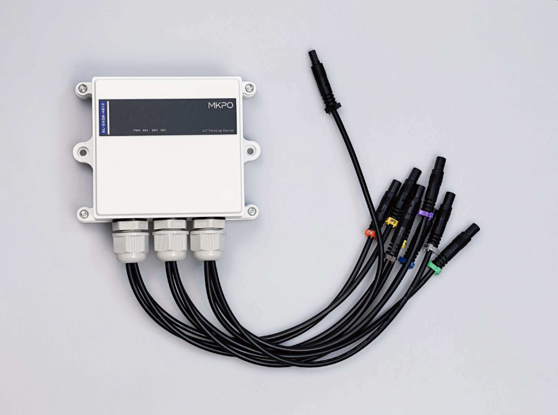

| 主控平台 | 高性能工业级处理器 (LuatOS 嵌入式实时系统) |
| 通信模组 | 4G LTE Cat.1，全网通，低功耗广域覆盖 |
| 加速度传感 | 三轴 MEMS 高精度加速度计，多量程可配置，I2C 高速接口 |
| 气压传感 | 超高分辨率气压计，I2C 接口，用于精密高度/楼层解算 |
| 数字 I/O 扩展 | 双路 16 位 GPIO 扩展，I2C 总线，支持 8 路传感器输入 + 8 路通道指示 + 3 路系统状态 |
| 智能诊断 | 每路传感器独立断连检测，断连时通道 LED 频闪、故障灯慢闪 |
| 存储系统 | 嵌入式文件系统，配置/故障/事件/运行/统计档案持久化 |
| 供电 | 宽压 DC 12–24V，工业级防护 |